Madison Park
 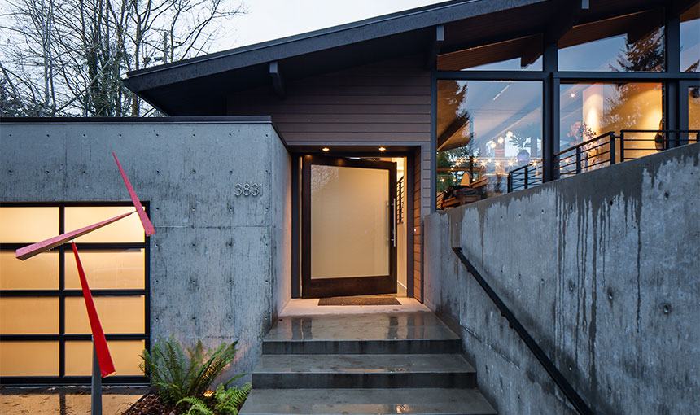
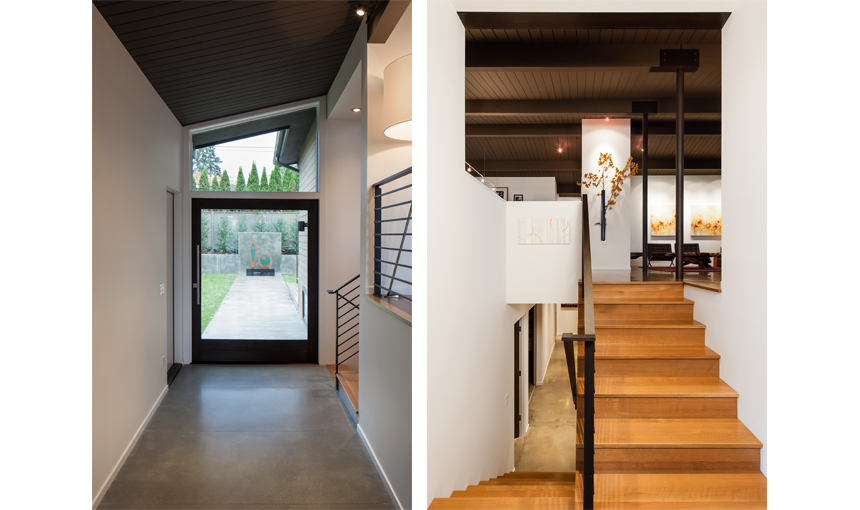
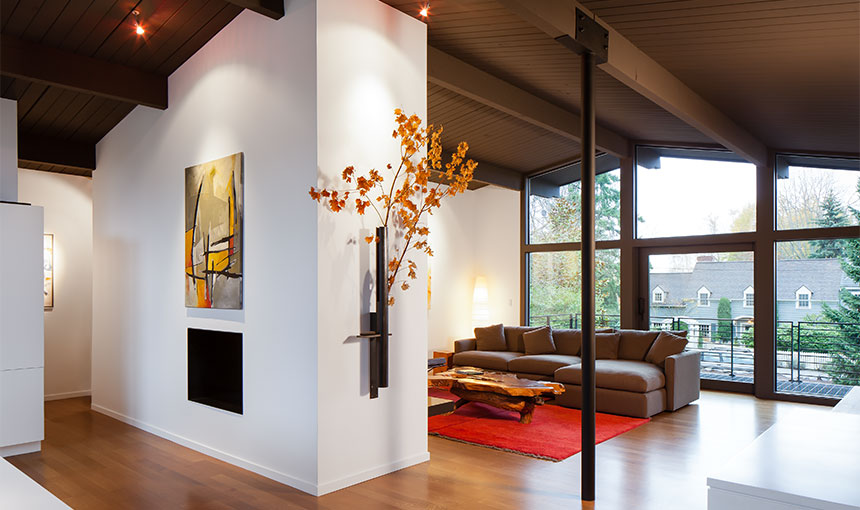
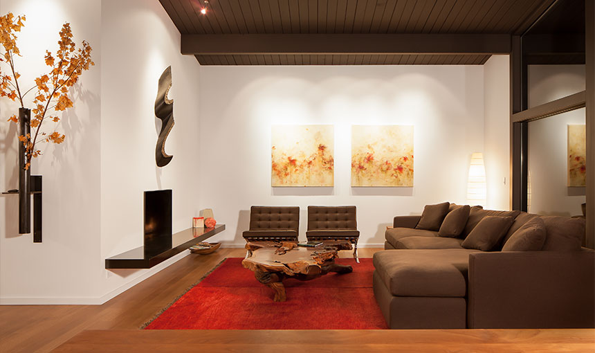
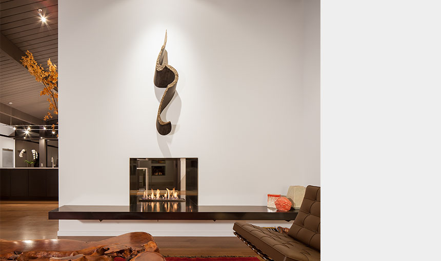
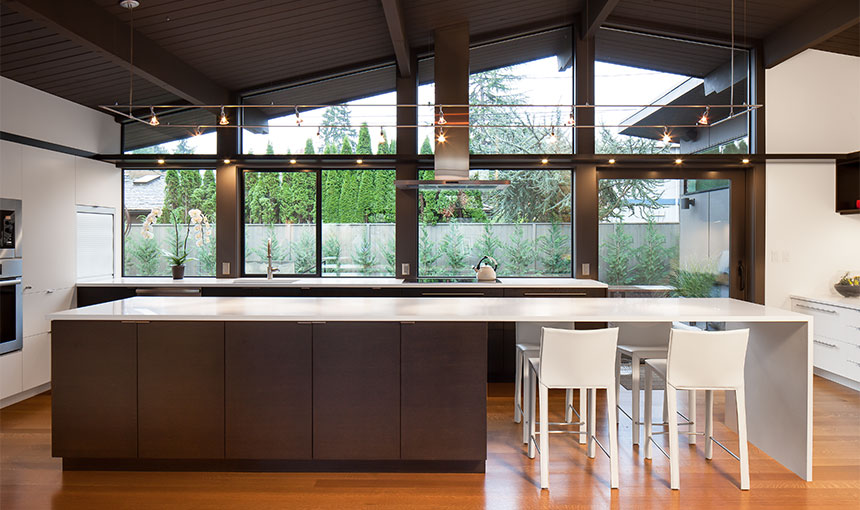
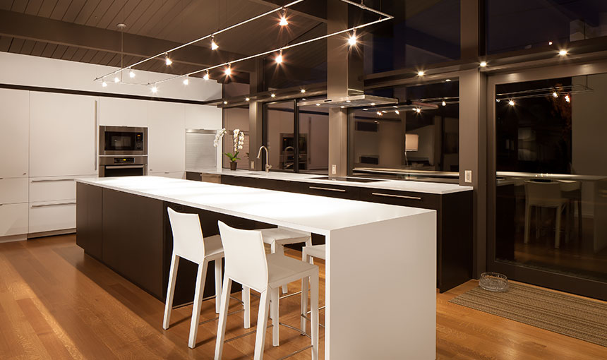
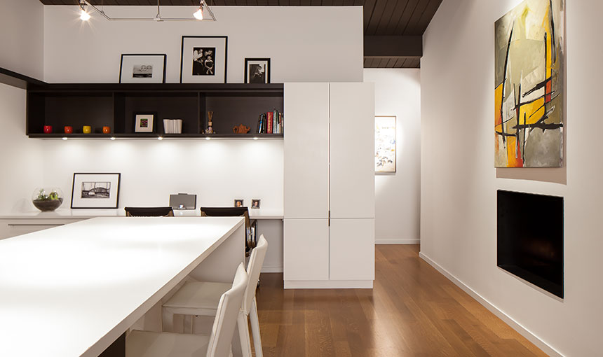
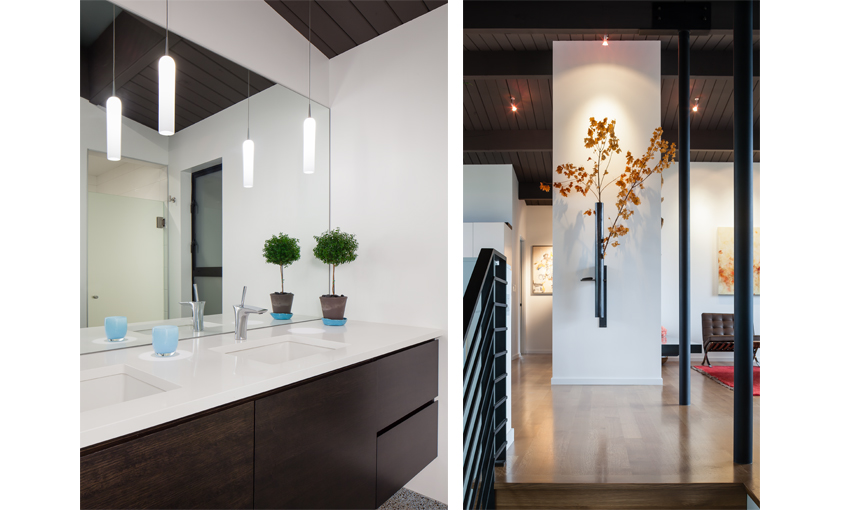
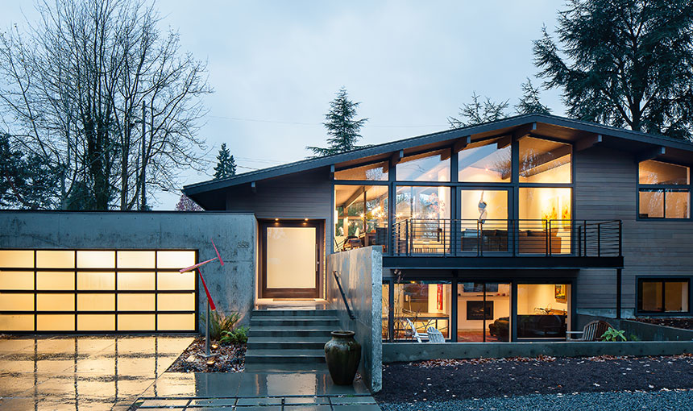
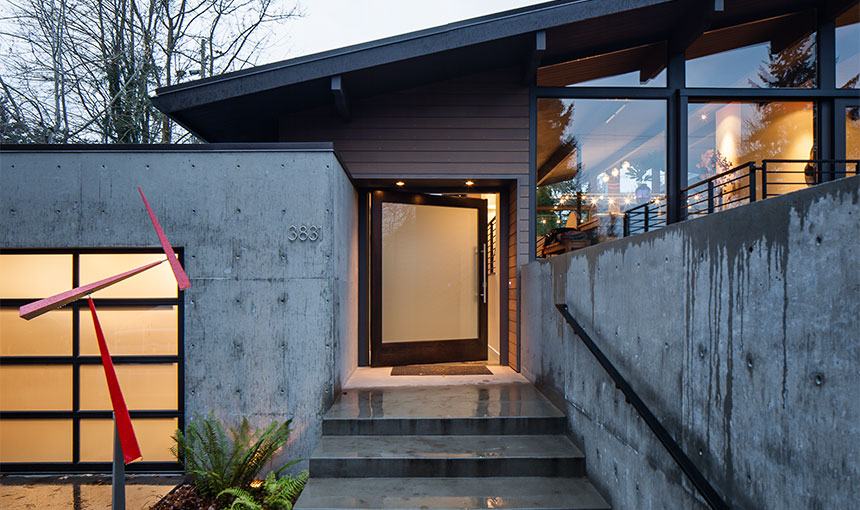
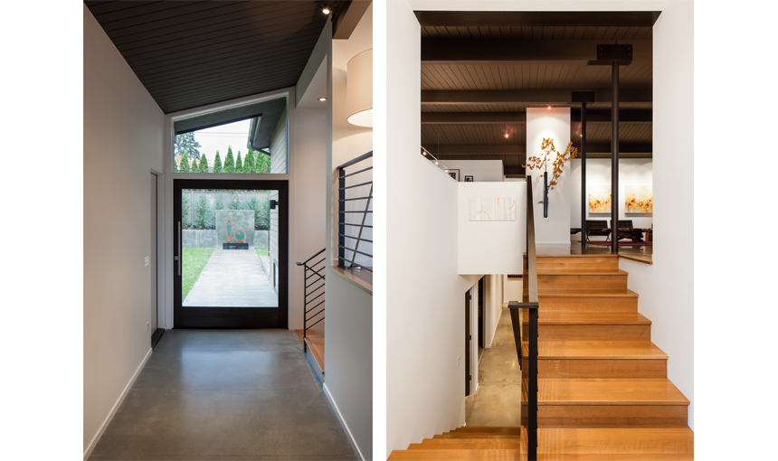
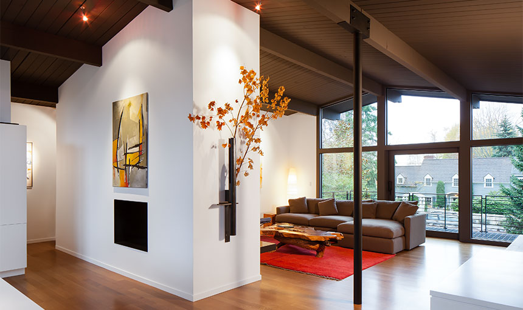
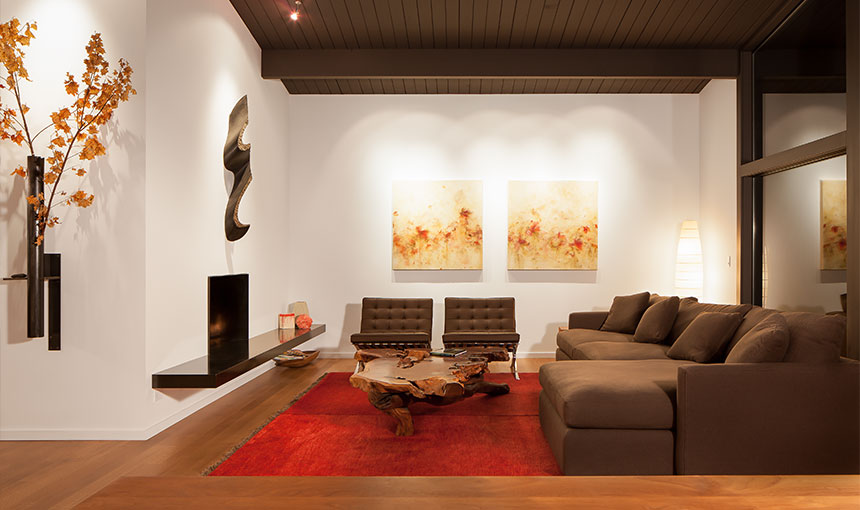
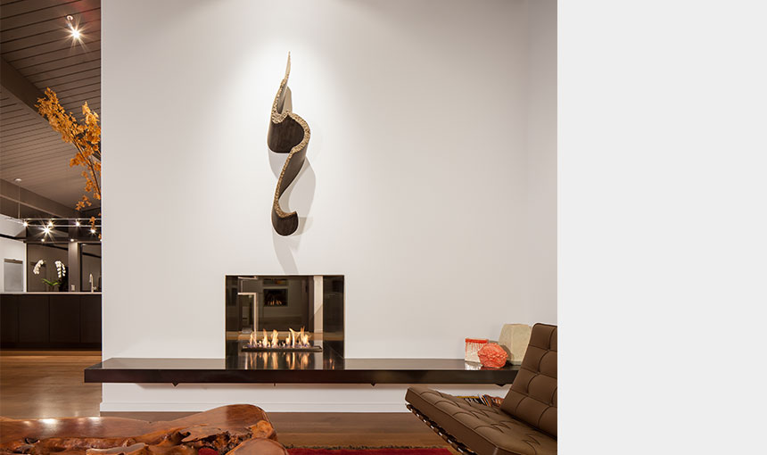
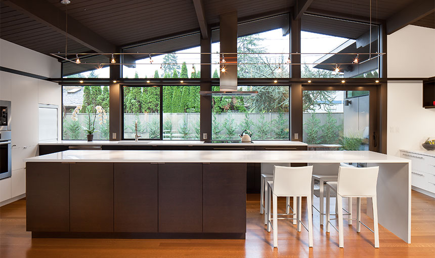
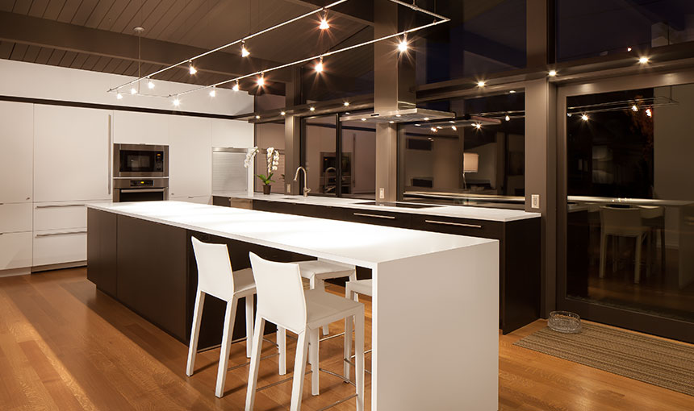
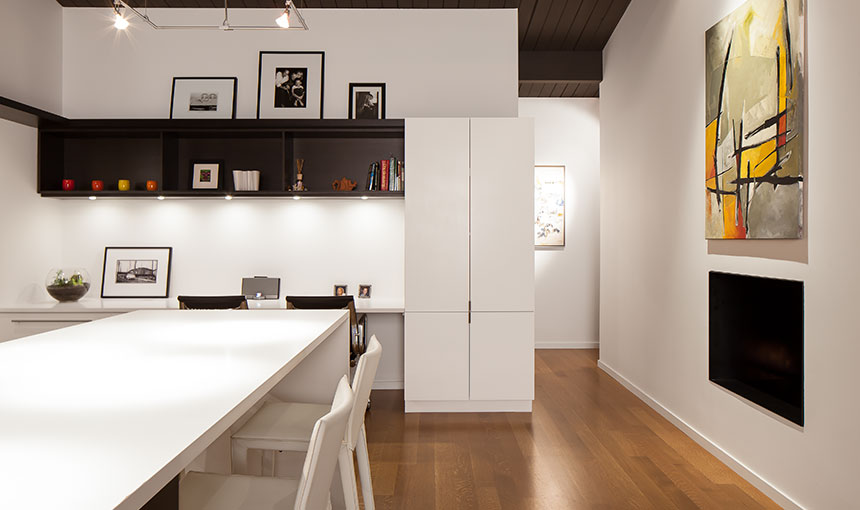
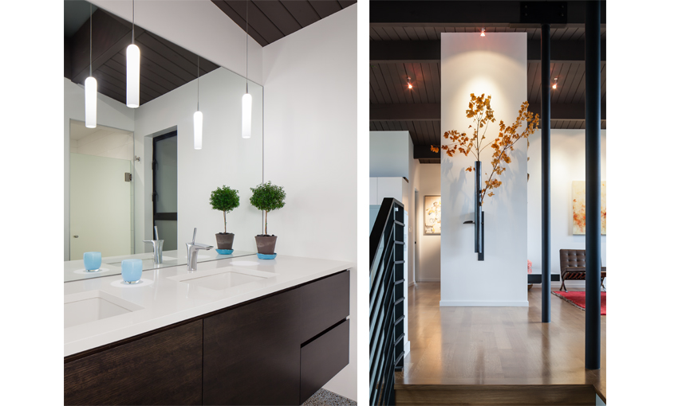
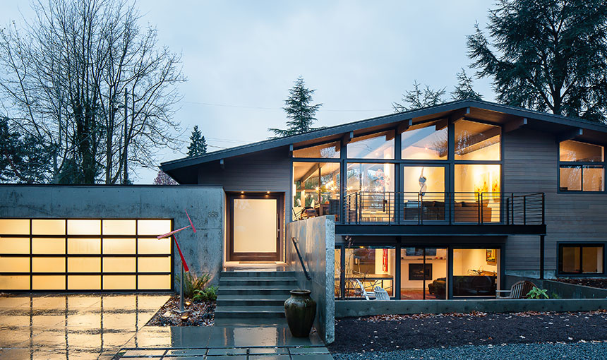
Project Description
The existing house is a classic ‘60’s era post-and-beam structure common in view neighborhoods built in that decade. Unusual in this case is that the house actually doesn’t have a view, and faces the street with minimal privacy. The owners loved the openness of the house regardless, so purchased it and hired Heliotrope to re-imagine the home. Our design solution utilizes landscaping to create privacy, rather than eliminating glass or using shades. An ‘urban forest’ has been planted in the front yard to provide a buffer to the street and provide a focus for the view. The new entry addition is buffered from the living spaces by a concrete site-wall as well as landscaping and further defined by a new poured-in-place concrete garage. Inside, our scope of work consisted of a ‘gut-renovation’ of the existing house and a reconfiguration of the layout. Our material palette is minimal in order to keep the focus on the natural surroundings and a significant art collection, which is accommodated on simple, white wall planes and integrated within the landscape.
- Location:
- Seattle, WA
- Building Area:
- 4,100 sf
- Completion:
- 2012